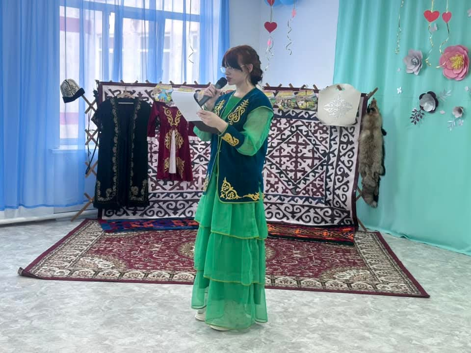
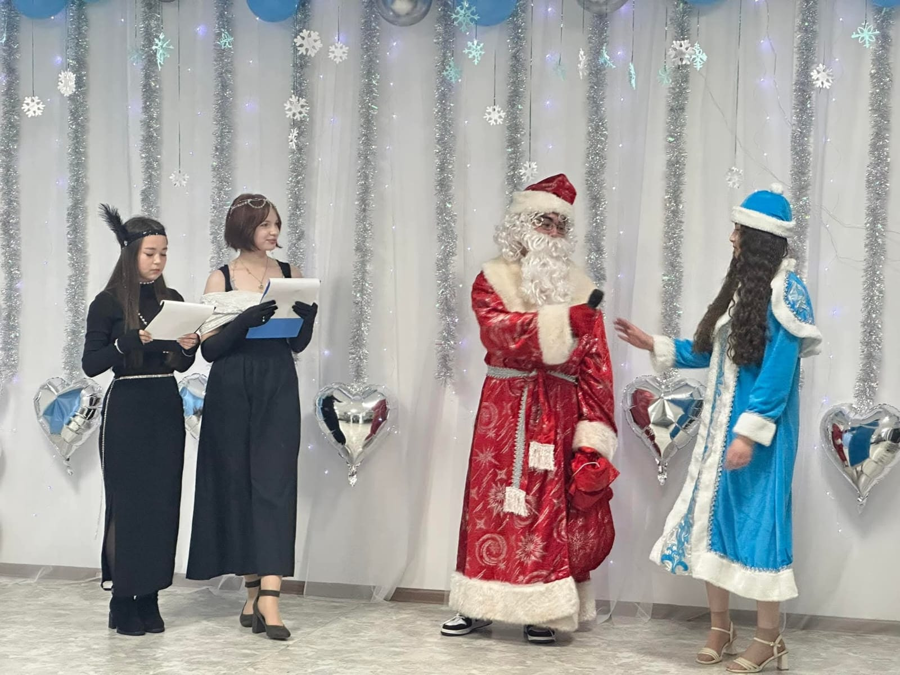
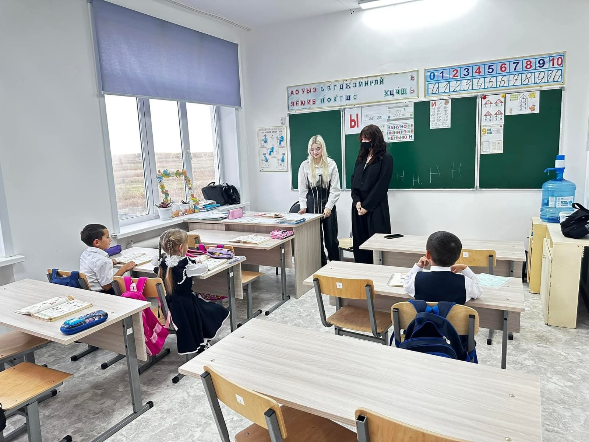
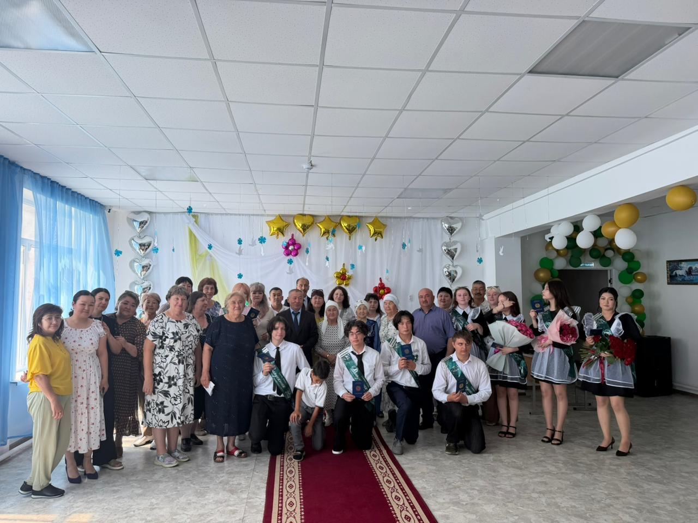
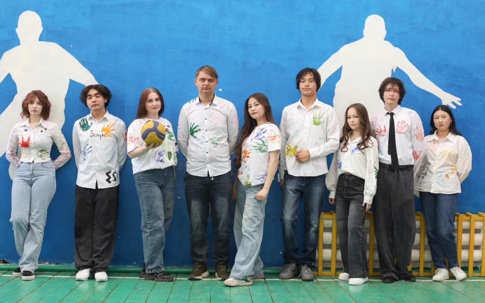

P O R T F O L I O
Школьные годы
Школа стала местом, где я впервые попробовала себя в роли организатора, ведущей мероприятий и наставника для младших школьников. Именно здесь появился опыт, который научил меня ответственности, работе с людьми и творческому подходу к каждому делу.

Ведущая школьного праздника, посвящённого Наурызу.

Ведущая и автор сценария новогоднего школьного бала.

Проведение урока для учеников первого класса в рамках Дня дублёра.

Торжественная церемония вручения аттестатов выпускникам.

Выпускная фотосессия с одноклассниками.